LASZLO v2：一个能拒绝交易的链上量化系统
工程闭环已经成立，Alpha 还没有。LASZLO v2 把链上采集、时间标注、样本外门禁、统一执行和事件账本接成一条可证伪的路径，并允许最诚实的结果是 0 BUY。

LASZLO v2 已经能完成一笔链上交易系统该做的工程工作：监听 Base 上的 Swap，计算特征，生成信号，在 Anvil 或主网执行，追踪持仓，触发退出，再把事件写进可复盘账本。
它还没有证明一件更重要的事：这些信号能稳定赚钱。
这两个结论必须同时写在开头。只写前者，是把工程能力冒充 Alpha；只写后者，又会忽略一个可靠实验环境本身的价值。
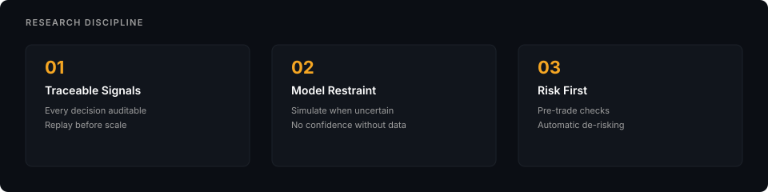
v2 的核心不再是「更快地下单」，而是让一个交易命题经过完整、可重放、不能绕过的检验：
ingest
→ label
→ train
→ holdout gate
→ paper / live
→ ledger
→ diagnose or stop
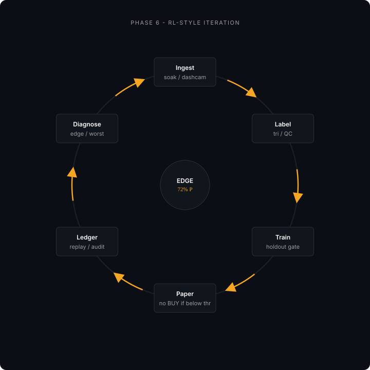
1. 系统究竟解决什么
链上市场不是缺数据。真正稀缺的是一条不会在中途偷换定义的证据链。
散户工具通常把流程拆开：一个页面看钱包，一个页面看价格，另一个页面下单，最后靠记忆解释盈亏。模型团队也容易把训练指标、模拟收益和真实执行混在一起，只要其中一个数字好看，就说策略有效。
LASZLO 想做的是另一件事：每个候选信号必须带着当时的特征、模型版本、阈值和市场状态进入账本，之后再用统一标签回看。策略不能只展示成功样本，执行器也不能在失败后悄悄重发一笔无法区分的新交易。
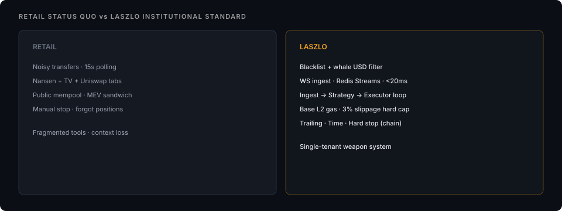
系统边界很窄：
- 主战场是 Base L2 上的 DEX 现货；
- 主要观察 Uniswap V3 事件；
- 单租户、单机 Docker Compose；
- Rust 负责采集和执行，Python 负责研究与策略；
- 不做 CEX 合约、跨链套利或大众 SaaS；
- 没有通过门禁的模型不能获得真实 BUY 权限。
2. 72% 不是信仰，是一条经济门禁
早期量化直觉常说「胜率超过 55% 就能试」。这句话忽略了赔率、滑点、Gas、MEV、机会成本、策略衰减和资本成本。
LASZLO 用 precision_economics.py 把这些假设显式写出来。按当时 Base 小额交易的收益与摩擦结构，模型需要在选定阈值上达到约 72% precision，才有机会覆盖成本并留下正期望。
这不是加密市场的宇宙常数。赔率分布、仓位和摩擦改变，门槛也会改变。它的价值在于：部署标准由经济约束倒推，而不是由「系统最近很久没交易了」倒推。
因此：
- 分布质检通过，不等于模型通过；
- 验证集好看，不等于时间 holdout 好看；
- 降低阈值换来几笔 BUY，不等于策略变强；
0 BUY可以是系统正确执行门禁的结果。

这里还要区分 Alpha 与 Beta。模型可能在某个市场阶段识别得不错，但 Base meme 池整体流动性收缩，账户仍然会输。选链、选池和选时间本身就是 Beta 决策，不能假装策略运行在真空里。
3. 架构：让每层只做一件事
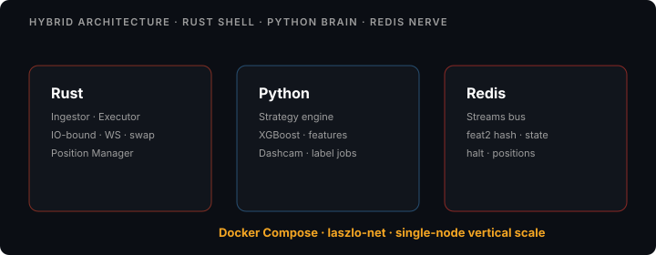
当前主路径如下：
Alchemy WS / HTTP
→ Rust Ingestor
→ Redis Streams: market_ticks
→ Python Strategy Engine
→ Redis Streams: signals
→ Rust Executor
→ Anvil fork / Base Mainnet
→ trade_ledger.jsonl
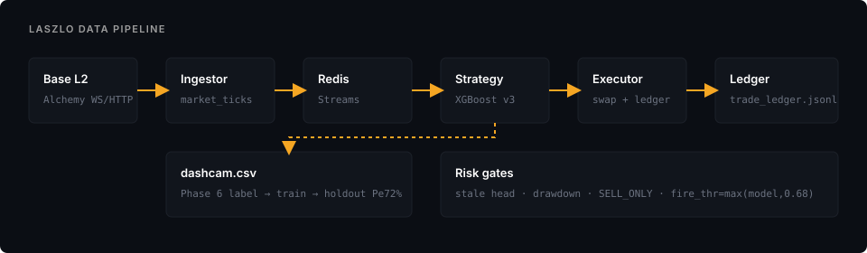
3.1 Ingestor：无状态的耳朵
Ingestor 订阅链上日志，解码事件，补齐池和代币信息，再把 MarketTick 以 MsgPack 写入 market_ticks。它不判断策略，不管理止损，也不直接发 signals。
这个边界很重要。采集服务一旦开始「顺手」做决策，故障恢复、重放和数据审计都会失去清楚语义。
Rust 与 Python 之间曾经因为 MsgPack 结构出过一个典型错误：to_vec() 把 struct 编成 Array，Python 却期待 Map。管道看起来在线，策略端实际无法读取。后来改为 to_vec_named()，并把跨语言契约加入启动检查。
3.2 Redis Streams：消息总线，不是真相本身
market_ticks 承载原始行情，signals 承载交易意图。Consumer Group 提供 at-least-once 语义：服务处理完成后才 XACK，崩溃后消息可以重新领取。
这意味着重复投递是系统特性，不是异常。因此交易端必须幂等。每个 SELL 意图带 intent_id，通过 Redis SET NX 取得处理权；交易提交后只按 tx hash 轮询 receipt，不能因为 RPC 暂时无响应就重发同一笔交易。
Redis 当前状态可以被覆盖，所以它不是复盘真源。单笔交易的最终事实保存在 trade_ledger.jsonl 事件链里。
3.3 Strategy：只负责提出 BUY
策略引擎消费 tick，更新 feat2:{symbol} 时间分桶，计算资金流、买压、波动代理和活跃度，再由模型输出候选分数。
它只允许发布开仓 BUY。平仓由 Position Manager 根据持仓状态写 SELL 信号，仍然经过统一 Executor。这样所有链上出口只有一个，风险和对账逻辑不会分叉。
3.4 Executor：唯一能移动资金的组件
Executor 消费 signals，完成链 ID、私钥、余额、风险状态、流动性和卖出可行性检查，再通过 Uniswap Router 构建并发送交易。
Paper 模式连接 Base fork 上的 Anvil；Live 模式连接 Base Mainnet。模式切换不是一个界面按钮，而是一组必须同时满足的配置与门禁。
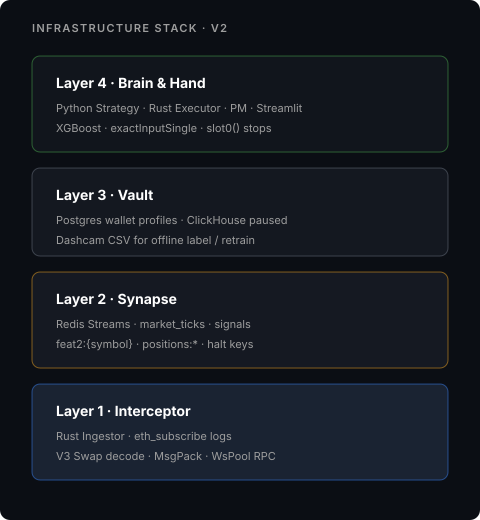
4. 一条 tick 如何穿过系统

一笔 Uniswap V3 Swap 被节点推送后，Ingestor 解码日志并写入 Redis；Strategy 读取 tick、更新特征、打分；只有高于部署阈值的信号才进入 signals；Executor 完成预交易检查后，才可能在 Anvil 或 Base 上提交。
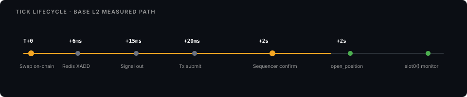
毫秒数字不是核心承诺。节点、缓存和链状态会改变延迟。真正需要稳定的是事件顺序和失败语义：哪一步失败，消息是否确认，资金是否移动，下一次恢复从哪里开始。
v1 曾把「T+20ms 执行」写得像性能合同。v2 更关心另一类问题：如果 T+17ms 时 RPC 结果不确定，系统会不会错误开仓；如果交易已经提交但 receipt 暂时读不到，会不会重复发送。
5. 模型闭环：先保证不能骗自己
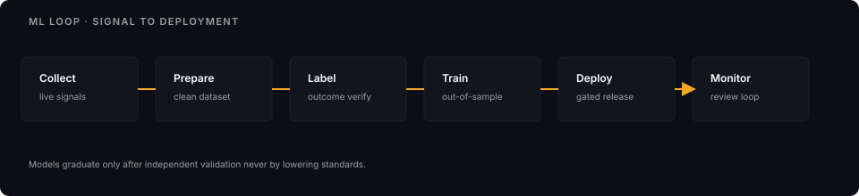
离线链路分为五步：
- Strategy 把候选信号与特征快照写入
dashcam.csv； - 清洗脚本生成统一 cohort；
- 标注脚本根据事后价格路径生成标签；
- 训练脚本按时间切分，最新七天作为固定 holdout；
- 只有 precision、样本量、AUC、gap 等门禁同时通过，才写出可部署模型与 manifest。
模型 manifest 记录 active features 及顺序。Strategy 启动时检查权重维度、特征 schema 和 manifest，一旦不一致就拒绝服务。比起让模型「先跑起来再说」，拒绝启动更安全。
5.1 标签比模型更值得怀疑
模型差不一定因为算法弱。可能是标签问题问错了、样本只覆盖单一 regime、收益窗口与真实执行不一致，或训练特征和线上特征没有同一种语义。
LASZLO 已经遇到过训练与线上漂移：训练侧某些滚动统计来自标注后的价格变化，线上却用 tick 资金流代理。字段名字相似，不代表分布和含义相同。
因此每次 exit=2 不再只触发「再调一次参数」，还要进入 edge diagnosis：分别检查标签、regime、特征、运行时和整个交易命题是否问错。
5.2 自动重训不能自动部署真理
自动化适合完成采集、标注和报告，不适合在指标边缘时替人解释证据。新模型可以自动生成，但不能只因为比旧模型高一点就获得资金权限。
复利不会区分正确与错误。一个自动重训系统如果奖励函数错了，只会更稳定地放大错误。
6. 风控：BUY 与 SELL 不对称
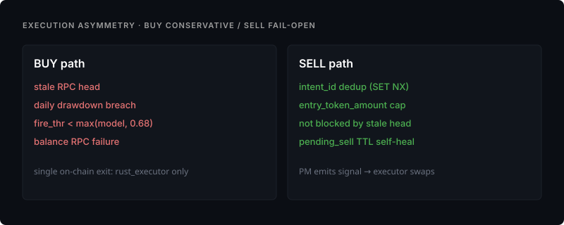
开仓创造新的风险，平仓减少已有风险。因此两者不能使用同一套失败策略。
BUY fail-closed
以下任一状态不确定，系统都拒绝新开仓：
- 链头过旧或 RPC 无法确认；
SYSTEM_PANIC或回撤停买已触发；- ETH / WETH 余额读取失败；
- 流动性不足，或 Quoter 无法证明代币可以卖出；
- 模型、manifest 或特征 schema 不一致；
- Gas 或滑点超过硬上限。
拒绝一笔可能赚钱的交易，只损失机会；错误开仓可能损失本金。
SELL 尽量 fail-open
SELL 不应该因为 stale head、日回撤或开仓门禁被挡住。系统使用持仓记录中的 token amount 上限，避免误扫钱包其他余额；若交易 receipt 明确 status=0，才解除锁并重新产生退出意图；若状态无法判定，则延长锁，避免重复卖出。
三重退出
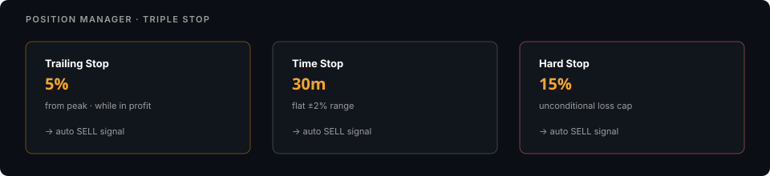
Position Manager 根据链上报价维护峰值和持仓时间：
- Trailing Stop：从峰值回撤约 5%；
- Time Stop：约 30 分钟后动量消失；
- Hard Stop：亏损达到约 15%。
这些数字是当前策略参数，不是普遍最优值。重要的是它们由统一状态机执行，并在账本里留下触发原因。
7. Base L2 改变了什么
v1 围绕 Ethereum Mainnet 和 Flashbots 设计。v2 迁移到 Base，主要为了降低实验成本和提高小额测试密度。
Base 的 Sequencer 结构让传统 Flashbots Bundle 不再是直接答案。当前保护来自 EIP-1559 参数、滑点硬上限、Gas 异常熔断、Quoter 模拟和更保守的信号门禁。
低 Gas 不代表低风险。小市值池的流动性、代币行为和 RPC 数据质量仍然可能让一笔「便宜交易」变成昂贵错误。
8. 四个真实故障
MsgPack 结构错了
Rust 输出 Array，Python 期待 Map。服务都在运行，数据却没有真正进入策略。跨语言契约后来改成显式测试，而不是靠双方「看起来兼容」。
特征值爆炸
早期 price_velocity_5m 用原始 token 数量推价格，小数位一变化就出现天文数字。后来改用 net_flow / abs_flow 作为有界方向代理。名字没那么漂亮，但语义更稳定。
止损读取占位价格
Position Manager 曾经写着 current_price = entry_price。系统能开仓，止损条件却永远不可能触发。涉及资金安全的 TODO 不应该返回一个「暂时合理」的值，而应该直接让构建或启动失败。
日回撤把不确定余额当成零
RPC 读数失败时，如果把余额默认成零，系统会制造一次虚假巨额回撤。现在读数不确定就跳过本轮检查，不写入错误风险状态；同时综合 ETH、WETH 和未平仓状态，避免把资产形态变化误认成亏损。
这些故障没有一件来自高深算法。交易系统最先伤人的，往往是序列化、单位、占位符和失败默认值。
9. 当前 honest 状态
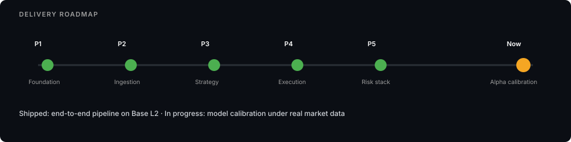
本文重写所依据的 2026 年 6 月快照是：
- 实时采集、信号、Paper 执行、持仓退出和账本闭环已存在；
- dashcam 时间跨度约 29 天，继续向 60 天 regime 覆盖累积；
- 一轮分布 QC 通过，但这只证明样本形式可用；
- 最新时间 holdout precision 远低于 72% 门禁，验证集最佳值也不足以部署；
- 线上保持 0 BUY 预期，不通过降低阈值制造交易；
- edge 稀缺和标签 / regime 问错两种解释都仍然成立。
状态会继续变化，当前值应以仓库里的 readiness、metrics 和 ledger 为准。这里保留的是写作时的事实，不把它冻结成永远的项目宣传。
10. 下一步不是继续堆功能
当执行闭环已经可用，继续增加 dashboard、数据库或策略名称的边际价值很低。真正需要回答的是：在足够长、足够多样的市场 regime 上，是否存在一个扣除摩擦后仍可部署的 edge。
接下来的动作只有三类：
- 增加有效证据：继续采集、检查标签质量和时间覆盖；
- 做有方向的证伪：ablation、周切片、标签变体、执行摩擦与衰减测试；
- 准备停止或 pivot：若 span 满足而 holdout 仍失败，停止增量 RPC 与 live 计划，转向更适合当前数据和执行能力的问题。
「已经写了很多代码」不是继续交易命题的理由。工程资产可以迁移，错误命题不需要被忠诚地维护。
结语
LASZLO v2 证明了什么？它证明一名 Builder 可以把链上采集、模型研究、Rust 执行、风险状态和复盘账本接成一个真实运行的系统。
它还没有证明什么？它没有证明当前标签和特征拥有可部署 Alpha，也没有证明代码量、低延迟或复杂架构能自动换来收益。
我现在更看重后一个结论。一个交易系统真正成熟的标志，不是它随时能开枪，而是它知道瞄准镜没有校准时，扳机应该被锁住。